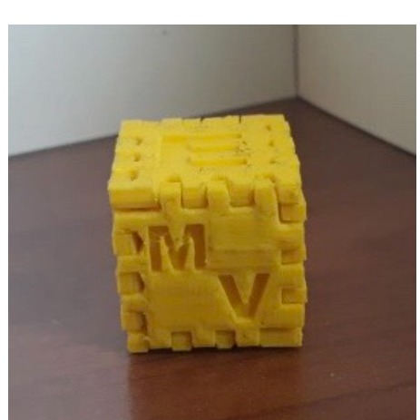
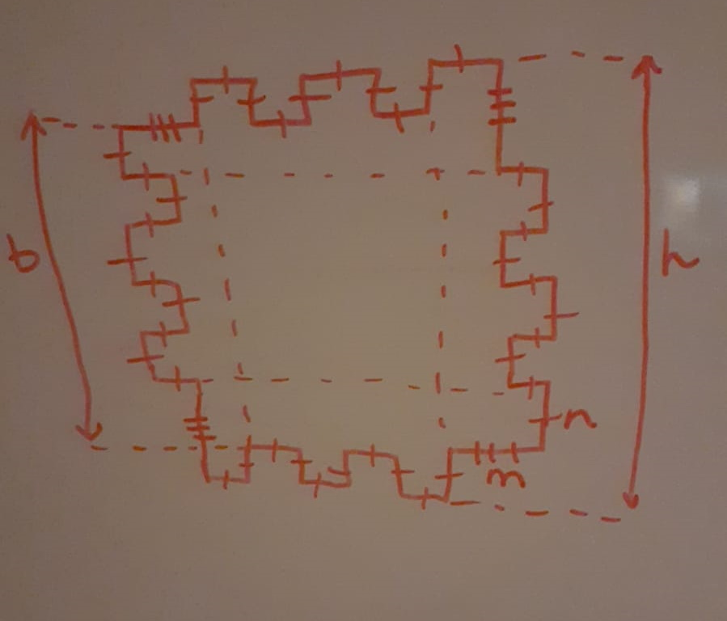
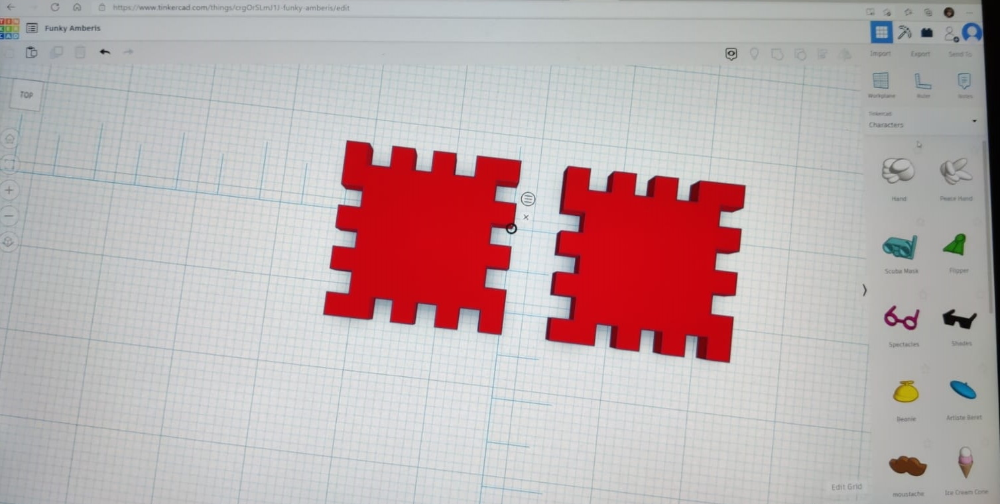
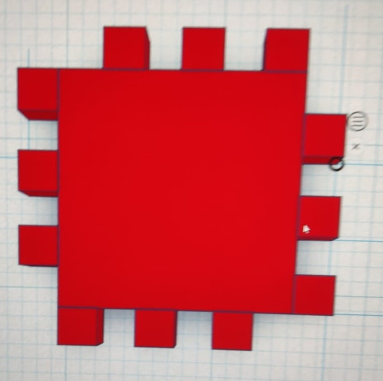

Kuba skaldnes izvēlējās veidot pēc dotā piemēra:
To veidoja 2 skaldņu tipi: četri apkārt viena tipa, augša un apakša otra tipa
Skice ar pirmā tipa skaldni:
Tā kā grupā bija 3 cilvēki, katrs veidoja 2 skaldnes. 2 cilvēki - Francis un Bērtulis - radīja pirmā tipa skaldnes, un atlikušais cilvēks - Toska - radīja otrā tipa skaldnes.
Izvēlējās katram cilvēkam uz vienas no skaldnēm likt sava uzvārda iniciāli, un uz otras skaldnes simbolu
| Cilvēks | Skaldnes tips | Iniciālis | Simbols |
|---|---|---|---|
| Francis | 1. | V | Saule |
| Bērtulis | 1. | Š | Sniegpārsla |
| Toska | 2. | P | Egle |
Radot skaldnes, bija divas metodes - no liela kvadrāta izņemt robus vai mazam kvadrātam pievienojot izcilņus. Divi cilvēki lietoja otro metodi, bet viens lietoja pirmo.
Radās problēma, ka Francis uztaisīja nepareizo skaldņu tipu:
Bet to viegli izlaboja, noņemot dažus no izcilņiem:
Kombinējot visu grupas veikumu vienā dokumentā, radās problēma, ka vienai personai abas radītās skaldnes bija saglabātas vienā dokumentā, un tādēļ tās nevarēja kustināt atsevišķi. Šo izlaboja, saglabājot abas skaldnes atsevišķos failos.